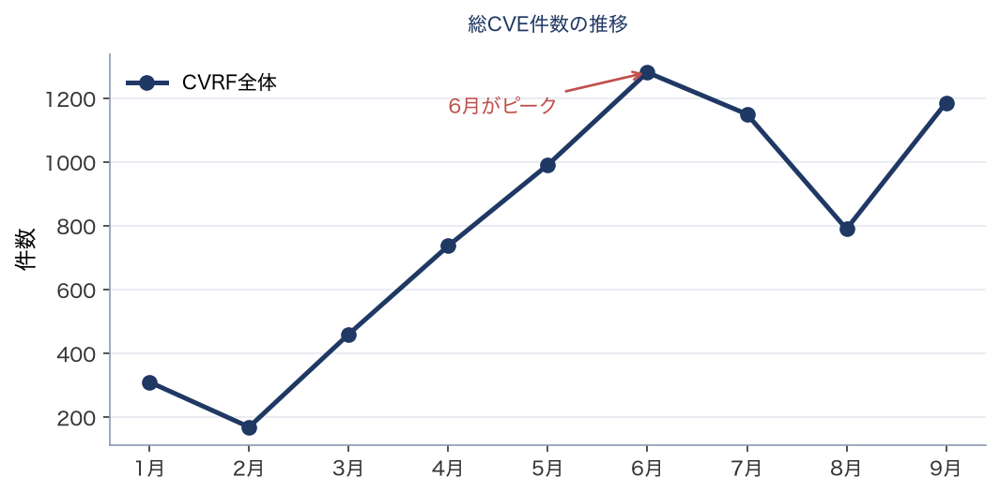
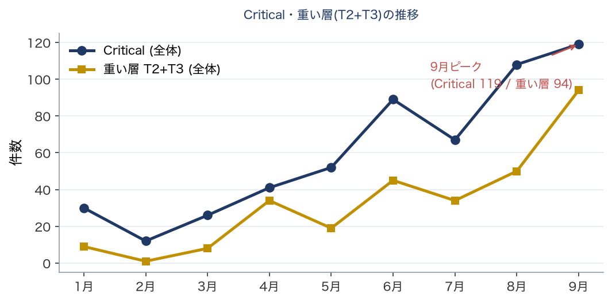
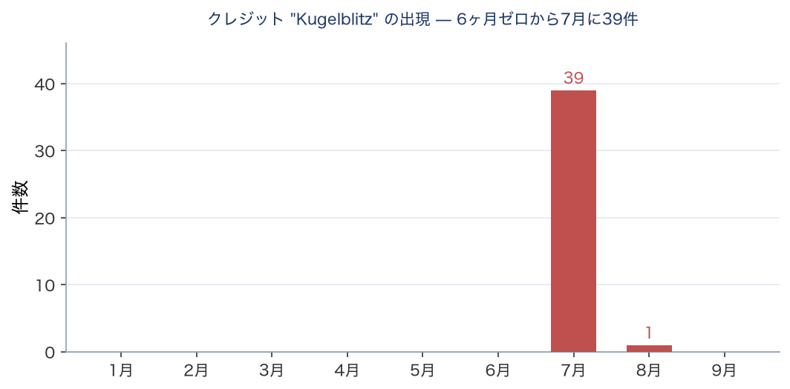
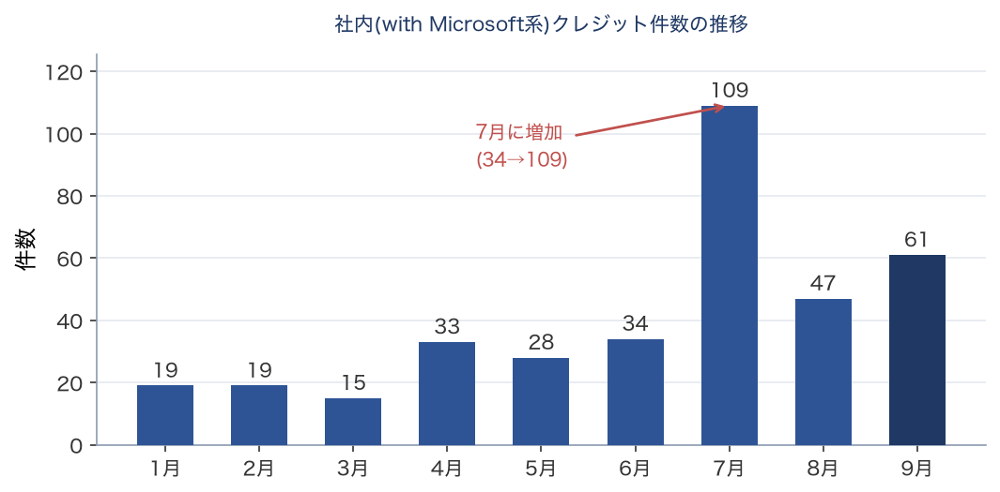

技術レポート（機械生成の事実 + 人間の解釈）
フロンティアAIによる脆弱性発見の急増
2026年9月時点の状況分析と、脆弱性対応にあたる実務者への示唆
脆弱性・パッチ対応の実務者および意思決定者
本レポートの構成と日付について 本レポートは、自動監視スクリプトが生成した事実記録（数値・表・グラフ）に、人間の解釈を差し込んで構成される。 事実データ取得日: 2026-09-10（スナップショットとして凍結） 解釈（本文分析）更新日: 2026-09-10 ※事実は自動、解釈は人間が別途更新する。両者の日付が離れている場合は、解釈が最新の事実を反映していない可能性がある。 |
MSRC の事後改訂について 本レポートは 2026-09-10 確定値に基づく。MSRC は過去月を事後改訂しており（例：6月 CVE 1281→1205）、改訂後データでは異なる結果に見える場合がある。改訂記録は別途保持。 |
【免責・出典】 • 本レポートは、脆弱性対応にあたる実務者を投影した仮想的な書き手による非公式な分析であり、特定の個人・組織の見解ではない。 • 事実データの出典：Microsoft MSRC CVRF、CISA KEV、その他公開情報。 • 分析の生成には AI（大規模言語モデル）を用いている。事実は可能な範囲で検証しているが、正確性・完全性を保証しない。重要な判断は一次情報で確認すること。 • 事実は自動更新されるが解釈は随時更新であり、両者の日付が離れている場合がある（ヘッダ参照）。 • 鮮度：本レポートの事実は 2026-09-10 時点。KEV や PoC 状況は時々刻々変わるため、最新は一次情報を参照。 |
【中立性に関する注記】 本レポートの分析生成には Anthropic 社の AI（Claude）を用いている。本レポートは同社の Project Glasswing 等に言及するが、これは公開情報に基づく中立的な記述を意図したものであり、特定企業を推奨・擁護するものではない。読者は一次情報に当たり、独自に判断されたい。 |
要旨
2026年9月の Patch Tuesday は、前月からすべての軸で増えた。CVE 全体で 790 から 1,186、MS本体相当で 420 から 975。変更管理を要する重い層も過去最多である。前号が「件数は減り、重さは増えた」と書いた形は、今月は当てはまらない。
そして今月、本レポートが KEV と EPSS を引くときの対象の決め方に欠陥が見つかった。 悪用が確認されている脆弱性が、照合の対象にすら入っていなかった。落としていた理由は「Microsoft が自社で見つけたから」である。 9か月分を数え直すと8件あり、そのうち7件が同じ理由で落ちていた。
前号までの欠陥は、規則が意図と食い違っていたものだった。今回は違う。規則は書いたとおりに動いていて、除外の理由がそのまま、除外してはいけない理由だった。
結論（一言） 今月はすべてが増えた。そして、こちらの絞り込みが「ベンダー自身が見つけた」ことを理由に、悪用確認済みの脆弱性を落としていた。 |
用語解説：「CVRF全体」と「MS本体相当」 CVRF全体 — MSRC の月次文書に載る全 CVE。Edge/Chromium、Azure Linux のパッケージ勧告、Azure クラウドの再掲載を含む。報道各社の集計が一致しないのは、この母集団の切り方が異なるためである。 MS本体相当 — CVRF全体から Edge/Chromium と Azure Linux のパッケージ勧告だけを除いた母集団。Azure クラウドの再掲載は本体相当に含まれる（azure_cloud の12件は core 側）。分離は製品識別子（ProductID を製品名へ解決）で行い、CVE のタイトル文字列に依存しない。今月の内訳は本体相当 975 / 除外 211（Azure Linux 187 + Edge/Chromium 24）で、除外の合計が完全に一致している。 |
分析：増えた月に、こちらの穴が見つかった
今月の数字は前月と逆向きに動いた。そのうえで、本レポートの側に欠陥が見つかっている。
|
2026年8月 |
2026年9月 |
CVE 全体 |
790 |
1,186 |
MS本体相当 |
420 |
975 |
クレジットあり |
405 |
926 |
重い層（T2+T3・本体相当） |
42 |
93 |
ゼロデイ |
3（うち悪用確認1） |
2（**2件とも悪用確認**） |
本体相当が 2.3 倍になったのは実データである。念のため確認した — Patch Tuesday 当日に初版が出た CVE は 1,024件（前月は 635件）、本体相当の製品名上位は Windows Server 2025・Windows Server 2022・Windows 11 24H2 で、いずれも本体そのものである。前号で訂正した「Azure Linux が本体相当に流れ込む」という旧分類器の失敗の再発ではない。
ゼロデイは2件に減ったが、2件とも悪用が確認されている。 前月は3件のうち悪用確認は1件だった。
悪用されたのは Critical ではない — 三か月続いた
今月のゼロデイ2件はいずれも深刻度 Important で、種別は権限昇格である。今月の Critical 119件のうち、悪用が確認されたものは1件も無い。
前月も前々月も同じ形だった。三か月続けて、Critical だけを見る運用は実際に悪用されている件を落とすことになる。
さらに前々月については、悪用が確認された2件のうち1件は Moderate であった。Important までを見るという運用でも落ちる。深刻度ラベルの上位だけを見る限り、この三か月のどの月でも取り落としが出る。
なお両件とも Patch Tuesday 当日に CISA KEV へ収載された（是正期限は2週間後）。三か月続けて、MSRC の開示と KEV 収載が同日である。ただし是正期限の長さは月によって違う。 前々月の1件は3日であった。「KEV に載れば2週間」と読まないこと。
核心：除外の理由が、除外してはいけない理由だった
本レポートは KEV と EPSS を、CVRF の全 CVE ではなく絞り込んだ集合に対して引いている。絞り込みの意図は、Edge の長い裾を落として外部 API への負荷とノイズを減らすことである。その意図自体は妥当だった。
問題は条件のほうにあった。対象は「重い層（T2/T3）または Critical または 外部クレジットあり」の3つで、悪用が確認されているかどうかは条件に入っていなかった。
9か月分を数え直した結果、悪用が確認されているのに対象外だった CVE が8件あった。 そのうち7件は、Microsoft が自社で見つけたもの（社内クレジット）である。 深刻度が Critical でなく、再起動を要する層でもなく、外部クレジットも無い — だから落ちた。
悪用が確認されている脆弱性において、「ベンダーが自社で見つけた」は注意を減らす理由ではない。 そして KEV を引く動機として最も直接的な属性、すなわち「ベンダー自身が悪用中だと言っている」ことが、条件に入っていなかった。
前号までに訂正した欠陥は、いずれも規則が意図と食い違っていたものだった。母集団の分離はタイトルに製品名が無い勧告を拾えず、製品カテゴリの分類は上流の表記変更に追随できなかった。今回は規則が書いたとおりに動いている。 意図と実装は一致していて、意図そのものが誤っていた。
条件を1つ足して直した。コストはほぼ無い — 今月の対象は 786件のままで、前々月が 457件から458件に増えるだけである。8件は9か月にわたって落ち続けていた。
示唆と推奨アクション
以下は本レポートの分析に基づく推奨であり、確定した規制要求ではない。規制当局の個別の監督上の期待については、一次情報での確認を前提とする。
1. 監視指標（前号からの継続）
「CVE件数」を脅威指標として使わない。今月は前月から5割増えたが、それ自体は防御負荷とも危険度とも対応しない。
変更管理を要する層の月次増減を追う。今月は本体相当で 42 から 93 へ、倍以上に増えた。適用計画に前月より時間を見込む必要がある。
ただし件数は作業量ではない。 対象が何製品に分散しているかで手間は変わる。本レポートは製品単位の分散を測っていない（前号と同じ限界）。
2. トリアージを深刻度ラベルから切り離す（前号からの継続・強化）
今月の Critical 119件に悪用確認は1件も無い。悪用が確認された2件はいずれも Important である。三か月連続で同じ形が出ている。
前々月は悪用確認2件のうち1件が Moderate だった。 Important までを見る運用でも落ちる。
移行先は前号と同じく、CISA KEV と EPSS と資産の到達性の組み合わせ。
3. 緊急パッチ SLA
今月の悪用確認ゼロデイ2件は、Patch Tuesday 当日に KEV へ収載され、是正期限は2週間後に設定されている。当日対応の対象である。
攻撃前提条件は2件とも同じ形をしている。 ベンダーの記述によれば、いずれもローカル認証が必要だが、必要な権限は一般ユーザー相当で足り、ユーザー操作も不要で、成功すれば SYSTEM 権限を得る。 前月の1件は攻撃難易度が高い（レースコンディションを要する）と評価されていたが、今月の2件はいずれも難易度が低いと評価されている。
一方（ALPC の件）は、低権限のサンドボックスからの脱出にも使えるとベンダーが明記している。 ブラウザ由来の攻撃連鎖に直接効く経路である。影響製品は20件で、8年近く前の版まで遡る。
是正期限の長さは月によって違う。 前々月の1件は3日であった。KEV に載ったら期限を確認すること。
4. 自分の絞り込み規則を、悪用確認で上書きする（本号で新設）
これは本レポート自身の欠陥から出た推奨である。外部の脅威情報と自組織の資産を突き合わせるとき、その突き合わせの対象をどう絞っているかを確認すること。
絞り込みの条件が「深刻度が高い」「外部から報告された」といった代理指標だけで構成されていると、ベンダーが自社で見つけた悪用確認済みの脆弱性が落ちる。
「悪用が確認されている」は、他のどの条件も上書きする。 絞り込みの例外として最初に置くこと。
5. Edge/Chromium 自動更新（前号からの継続）
今月の Edge 勧告は24件である。前月とは比較できない。 8月は製品カテゴリ分類が v1 で、Edge をタイトル文字列で判定していた。前月はまさにその書式が変わって分類が機能しておらず、凍結値は1件になっている（実際の Edge 勧告は「その他」334件に紛れている）。表5 と同じ理由で、この数字も前月と並べられない。
本項の要点は件数に依存しない。Electron/CEF 埋め込みアプリ（Teams、Slack、VS Code 等）はブラウザの自動更新の恩恵を受けない。 SBOM でこれらの依存を洗い出す価値は変わらない。
6. AI 依存の BCP（前号から継続）
AI をワークフローに組み込む場合、最上位モデルへの依存は BCP の対象と位置づけ、モデル多重化とフォールバック設計を標準とする。
実データ内訳 — 2026年9月 Patch Tuesday
以下は MSRC CVRF v3.0 から取得した一次データの集計である（凍結スナップショット 2026-09-10）。母集団は「CVRF全体」と、Edge/Chromium と Azure Linux を除いた「MS本体相当」を併記する。Azure クラウドは除外していない — 分類器 v2 は影響製品で判定しており、azure_cloud の12件は本体相当に入る。数値・表は state から自動生成で、以下は各表に付す事実ベースの要点コメントである。
表1. 深刻度別（母集団2種の併記）
深刻度 |
CVRF全体 |
(%) |
MS本体相当 |
(%) |
Critical |
119 |
10% |
114 |
12% |
Important |
913 |
77% |
861 |
88% |
Moderate |
112 |
9% |
0 |
0% |
Low |
18 |
2% |
0 |
0% |
Unrated |
24 |
2% |
0 |
0% |
合計 |
1186 |
100% |
975 |
100% |
表1（深刻度別）の要点
Critical は前月の 108件から 119件へ増えたが、CVRF 全体の母数も 790 から 1,186 へ増えているため、比率では 13.7% から 10.0% へ下がっている。119件のうち5件は Azure Linux のパッケージ勧告で、本体相当の Critical は 114件である。その内訳は遠隔コード実行 82件・権限昇格 27件・情報漏えい 2件で、悪用が確認されたものは1件も無い。
表2. 再起動クラス別（実務負荷の軸）
クラス |
内容 |
CVRF全体 |
MS本体相当 |
T3 |
段階展開必須（Boot/Crypto） |
5 |
4 |
T2 |
変更管理・メンテ枠が必要 |
89 |
89 |
T0/T1 |
自動更新・定常パイプライン |
1092 |
882 |
表2（再起動クラス別）の要点
T2 と T3 を合わせた「重い層」は本体相当で 93件、本レポートの観測範囲（2026年1月以降）で最多である。前月は 42件、前々月は 33件であった。母数も増えているため比率では 9.5% にとどまるが、この層は変更管理とメンテナンスウィンドウを要するため、絶対数が計画に効く。 ただし本レポートは、この 93件が何製品に分散しているかを測っていない。件数の最多をもって前月より重いと断ずることはできない。
表3. 発見者大分類（CVRF全体）
区分 |
件数 |
(%) |
備考 |
クレジット無し |
260 |
22% |
自動化を含む可能性（断定不可） |
外部研究者（実名） |
705 |
59% |
実名の外部発見者 |
匿名（Anonymous） |
92 |
8% |
名乗り出た匿名 |
社内（with Microsoft等） |
61 |
5% |
Kugelblitz/MORSE/WARP・ACS等を含む |
ハッシュ識別子 |
68 |
6% |
MSが匿名化した識別子（正体不明） |
表3（発見者大分類）の要点
外部クレジットが 275件から 705件へ、クレジットのない CVE が 385件から 260件へ動いた。前月は「クレジットのない CVE が全体の 48.7%」という状態で、Critical に限れば 47% がクレジット無しだった。今月は逆向きである。ただし前月にその原因を特定できなかったことは変わらない。 逆向きに動いたという事実だけを記録する。
表4. Critical脆弱性の発見者内訳（集約・実名なし）
発見主体 |
Critical件数 |
傾向 |
外部研究者（実名） |
62 |
Criticalの多数派 |
社内（ACS/WARP/MORSE等） |
22 |
少数（Networking/Hyper-V中心） |
匿名（Anonymous） |
16 |
— |
クレジット無し |
10 |
自動化の可能性（断定せず） |
ハッシュ識別子 |
9 |
— |
Kugelblitz（Edge・参考） |
0 |
Criticalには出現しない（面のみ） |
件数のみ（個人実名は事実データに保存しない）。上4〜5行はバケット別で合計=Critical総数。Kugelblitz 行は横断参考（加算しない）。個別の研究者名・CVE例は解釈側に散文で記載。
表4（Critical脆弱性の発見者内訳）の要点
前月は Critical 108件のうち51件（47%）がクレジット無しで、24時間の間隔を置いた再取得でも1件も動かなかったため、当月の実態として記録した。今月は表3と同じ向きに動いている。依然として、この指標が何を反映しているかは分からない。 前号で確立した規律のとおり、謝辞の不在から発見主体を推論しない。
表5. 製品カテゴリ別（CVRF全体）
カテゴリ |
件数 |
(%) |
Win Services/Components |
314 |
26% |
Azure Linux（再掲載） |
187 |
16% |
Kernel/Driver |
147 |
12% |
Office/Word/Excel/PPT |
125 |
11% |
Networking |
104 |
9% |
SQL/Dynamics |
64 |
5% |
Microsoft (other) |
47 |
4% |
その他 |
40 |
3% |
RDP/Remote |
32 |
3% |
Graphics/Media |
29 |
2% |
Edge/Chromium |
24 |
2% |
.NET/Dev |
22 |
2% |
Auth/Identity |
16 |
1% |
Exchange |
12 |
1% |
Azure/Cloud |
12 |
1% |
Hyper-V/Virtual |
7 |
1% |
Boot/Crypto (T3) |
4 |
0% |
表5（製品カテゴリ別）の要点
本号から、この表は製品識別子ベースの分類で生成されている。 前号までタイトル文字列に依存しており、前月は Microsoft が Edge 勧告のタイトル書式を変更したために分類が機能していなかった。今月は「その他」が40件で、その全てが「範囲内だが分類規則を持っていない」もの — すなわち規則を足すべき対象の一覧として読める。
前月の表5 と並べないこと。 前月の「その他」334件は旧分類の出力で、Azure Linux の勧告を含んでいる。今月の40件とは母集団も分類方法も違う。数字だけを見ると大幅な改善に見えるが、分類器の版が違うだけである。 生成側は本号に旧版の警告注記を出さないため、この断りは本文が担う。
補遺：「AI関連」を示唆するクレジットの棚卸し
「Kugelblitz」というクレジット名は、7月に0から39件へ不連続に出現し、8月に1件、今月は0件である。三か月とも Critical には1件も現れていない。
この推移は解釈できない。 7月の39件はすべて Edge 勧告に紐づいており、Edge の件数自体が月ごとに大きく振れる。「AI 由来の発見が止まった」ではなく「その名前が出なくなった」が言えることの全てである。
前号までに記録したとおり、この種のクレジット名から実体を推定しない。7月号がこの名称を特定の内製ツールと断定し、一次情報による裏取りで撤回した経緯がある。数えたのはクレジット文字列の一致だけである。
過去データとの比較 — 2026年1月〜9月の推移
月をまたぐ比較の条件が揃っているのは、前月と今月の間だけである。両月とも製品識別子ベースの分類器で計算され、Patch Tuesday から同じ距離（翌々日）で凍結されている。6月以前は分類器も凍結距離も異なる。推移表から「MS本体相当」の列を落としているのはこのためで、以下の図で並べている軸はいずれも分類器に依存しない。
推移表（取得ラグに頑健な実数のみ）
月 |
CVE全体 |
Critical |
重い層(T2+T3) |
Kugelblitz |
社内(MS) |
1月 |
310 |
30 |
9 |
0 |
19 |
2月 |
169 |
12 |
1 |
0 |
19 |
3月 |
460 |
26 |
8 |
0 |
15 |
4月 |
737 |
41 |
34 |
0 |
33 |
5月 |
991 |
52 |
19 |
0 |
28 |
6月 |
1281 |
89 |
45 |
0 |
34 |
7月 |
1150 |
67 |
34 |
39 |
109 |
8月 |
790 |
108 |
50 |
1 |
47 |
9月 |
1186 |
119 |
94 |
0 |
61 |
※「CVE本体（MS本体相当）」の列は載せない。母集団の分類器を 2026-Aug から v2（影響製品ベース）に替えており、v1（タイトルベース）で凍結した月と同じ列に並べると、分類器を替えたことが「MS本体相当の急変」という推移に見えるため。当月の本体側の内訳は上の表に載せている（単月なので版の混在は起きない）。

図1: 総CVE件数の推移（CVRF全体）
図1（総CVE件数）の解釈
今月は前月から5割増えた。ただしこの曲線は防御負荷とも危険度とも対応しない。母集団に何が含まれるかが月ごとに変動するためで、その変動は本レポートが凍結値を確定した後も続いている。

図2: Critical件数・重い層(T2+T3)の推移
図2（Critical・重い層）の解釈
両方とも増えている。重い層は最多を更新した。前月は「総件数が減る月に両者が増える」形で、今月は「すべてが増える」形である。二か月で向きが変わっており、傾向として読める段階ではない。

図3: クレジット「Kugelblitz」の月次出現
図3（Kugelblitz）の解釈
7月に突出した後、8月に1件、今月は0件。補遺に述べたとおり、この減少は Edge 勧告そのものの増減と分離できない。曲線の形から主体の活動を読み取ることはできない。

図4: 社内(with Microsoft系)クレジット件数の推移
図4（社内発見）の解釈
件数と比率で向きが逆になる。 Microsoft 社内発見のクレジットは前月の47件から61件へ増えた。しかしクレジット総数が 405件から 926件へ増えているため、比率では 11.6% から 6.6% へ下がっている。 どちらも事実であり、どちらを言うかを決めて読む必要がある。この図は件数を描いている。
推移から読み取れること（要約） 今月はすべての軸が増えた。前号の「件数は減り、重さは増えた」という形は当てはまらない。 重い層は最多を更新した。ただし製品の分散度合いを測っていないため、作業量の最大とは言えない。 「MS本体相当」は前月と今月の2点しか比較できない。表5 も同じく、今月が最初の1点である。 社内発見は件数と比率で向きが逆になる。図は件数を描いている。 |
KEV / EPSS — 即応の優先度づけ
以下は対象CVE（T2/T3 ∨ Critical ∨ 外部研究者クレジット）を CISA KEV・FIRST EPSS と照合した結果。KEV = 悪用確認の離散的事実（通知トリガー）。EPSS = 悪用確率の推定（取得時点の値・日々変動・参考）。数値から発見主体・因果は断定しない。
即応対象 — CISA KEV 収載（取得 2026-09-10）
CVE |
製品名 |
深刻度 |
再起動クラス |
CVE-2026-81963 |
Windows Update Stack |
Important |
T0/T1 |
CVE-2026-85880 |
Windows Advanced Local Procedure Call (ALPC) |
Important |
T0/T1 |
EPSS 上位 — 悪用確率の推定（取得時点 2026-09-09）
CVE |
製品カテゴリ |
EPSS |
パーセンタイル |
CVE-2026-70065 |
Networking |
0.0120 |
66.3% |
CVE-2026-77494 |
Networking |
0.0120 |
66.3% |
CVE-2026-69676 |
Auth/Identity |
0.0117 |
65.5% |
CVE-2026-69342 |
Networking |
0.0115 |
65.0% |
CVE-2026-72949 |
Networking |
0.0115 |
65.0% |
CVE-2026-77895 |
Networking |
0.0115 |
65.0% |
CVE-2026-77484 |
SQL/Dynamics |
0.0115 |
64.8% |
CVE-2026-69497 |
Networking |
0.0114 |
64.6% |
CVE-2026-69839 |
Win Services/Components |
0.0114 |
64.6% |
CVE-2026-69378 |
Exchange |
0.0111 |
63.8% |
CVE-2026-69595 |
Networking |
0.0106 |
62.6% |
CVE-2026-70019 |
Win Services/Components |
0.0106 |
62.5% |
CVE-2026-78461 |
.NET/Dev |
0.0106 |
62.5% |
CVE-2026-69329 |
その他 |
0.0106 |
62.4% |
CVE-2026-69829 |
Win Services/Components |
0.0105 |
62.4% |
※EPSS は毎日更新され値が変動する。上表は取得時点（2026-09-09）のスナップショットであり、単独のトレンド指標として用いない。通知トリガーには KEV のみを使う（EPSS は使わない）。
※製品名（KEV表）・製品カテゴリ（EPSS表）は CVRF（2026-09-10 凍結スナップショット）由来。KEV 収載状況・EPSS 値とは別ソース・別時点である。カテゴリは表5と同一の分類による。製品名/カテゴリの数値から発見主体・因果は断定しない。
別紙：調査手順・出典・アカウンタビリティ記録
本別紙は、本編の結論に至る調査過程を、途中で棄却・修正した仮説を含めて記録する。分析の再現可能性と説明責任の確保を目的とする。
1. 調査の目的と問い
本号の問いは前号から引き継いでいる — 月次の脆弱性データから、対応の負荷と実際の危険度について何が言えるか。加えて本号は、外部の脅威情報（KEV / EPSS）を引く際の対象の決め方を検証した回である。
2. 情報源
本号は一次データのみに依拠しており、報道等の二次情報を参照していない。
MSRC CVRF API v3.0 — 月次のセキュリティ更新を CVE 単位の構造化データで提供。発見者クレジット、深刻度、悪用状況、対象製品、CVSS ベクタ、FAQ を含む。
CISA KEV カタログ — 悪用が確認された脆弱性の一覧。当月の CVE との突合に使用。
FIRST EPSS — 30日以内に悪用活動が観測される確率の推定。
3. データ取得方法
MSRC CVRF API から取得担当者のローカル環境で一次データを取得し、Patch Tuesday の翌々日に凍結した。前月も同じ距離で凍結している。凍結の前日と当日で24時間の間隔を置いて再取得し、主要指標が動かないことを確認したうえで確定した（動いたのは Azure Linux の1件のみ）。
4. 分析手順（時系列）
Patch Tuesday の翌日に一次データを取得。
翌々日に再取得し、24時間で本体相当・クレジット数・深刻度・再起動クラス・ゼロデイが動かないことを確認して凍結した。
本体相当が前月の2.3倍になったため、旧分類器の失敗（Azure Linux の流入）の再発を疑い、製品識別子ベースで内訳を確認した。再発ではなかった。
KEV と EPSS を当月の CVE に対して取得。
悪用が確認されたゼロデイ2件について、CVRF の CVSS ベクタ・Threats・FAQ の原文を確認した。
EPSS の順位を月をまたいで比較しようとした過程で、過去月の悪用確認 CVE の一部が EPSS 値を持っていないことに気づいた。 対象集合の定義を調べ、9か月分を数え直した（第5節）。
5. 調査過程で棄却・修正した指標【重要】
説明責任の観点から、当初採用したが後に棄却・修正した判断を記録する。
棄却① 「EPSS は悪用が確認された CVE を上位に出さない」という見立て。 当初、悪用確認 CVE の EPSS 順位が三か月続けて低いという形で書こうとした。成立しない。 実測すると、前々月に悪用が確認され EPSS 値を持つ CVE は 445件中3位（上位8%）であった。今月の2件は 786件中 257位・296位（いずれも中央値よりわずかに下）、前月の1件は 360件中171位である。高いこともあれば中央値以下のこともあり、順位はどちらの向きにも使えない。 一貫して低いなら反転して使えるが、ばらつくならそれもできない。なお対象は5件すべて Microsoft 製品の権限昇格であり、ここから EPSS 一般を論じることはできない。
発見② 悪用が確認されているのに、KEV / EPSS 照合の対象に入っていない CVE があった。★本号の中心★ 棄却①の実測中に判明した。本レポートは KEV と EPSS を、CVRF の全 CVE ではなく絞り込んだ集合に対して引いている。対象条件は「重い層（T2/T3）または Critical または外部クレジットあり」の3つで、悪用が確認されているかどうかが条件に入っていなかった。
9か月分を数え直した結果は次のとおりである。
月 |
悪用確認 |
旧条件で対象外 |
1月 |
2 |
2 |
2月 |
6 |
4 |
5月 |
3 |
1 |
7月 |
3 |
1 |
3月・4月・6月・8月・9月 |
計5 |
0 |
**合計** |
**19** |
**8** |
8件すべてが KEV に収載済みで、そのうち7件は Microsoft の社内クレジットであった。 深刻度が Critical でなく、重い層でもなく、外部クレジットも無い — 3条件のどれにも当たらないため落ちていた。
特に前々月の1件（Active Directory フェデレーションサービスの脆弱性）は、Patch Tuesday 当日に KEV へ収載され、その2日後に本レポートが照合を実行しているにもかかわらず、対象外であったために検知されていない。KEV 新規収載の通知も、この集合の差分を見ているため、一度も出ていない。
除外の理由が、除外してはいけない理由と同じであった。 「Microsoft が自社で見つけた」ことは、悪用が確認されている脆弱性において注意を減らす根拠にならない。そして KEV を引く動機として最も直接的な属性 —「ベンダー自身が悪用中だと言っている」— が条件に入っていなかった。
前号までの欠陥とは性質が違う。 母集団の分離はタイトルに製品名が無い勧告を拾えず、製品カテゴリの分類は上流の表記変更に追随できなかった。いずれも規則が意図と食い違っていた。今回は規則が書いたとおりに動いており、意図そのものが誤っていた。
条件に「悪用が確認されている」を追加して修正した。過去月の照合結果は修復できない。 保持している照合データは当月分のみで、過去月のものは残っていない。
修正③ 同じ条件が2箇所に書かれていた。 対象判定の関数を直す過程で、集計処理の側が同じ条件をその場に書き写して持っていることが分かった。片方だけを直せば、両者が黙って食い違う状態になっていた。一方が他方を呼ぶ形にし、両者の一致を試験で固定した。
記録④ 前号の記述の出所を訂正する。 前号は前々月のゼロデイについて「いずれも開示当日に KEV へ収載されていた」と書いた。事実として正しいが、当時のツールから出せる結論ではなかった。 そのうち1件は上記のとおり照合の対象外であり、パイプラインは KEV 収載を検知していない。手作業で確認した結果を書いていた。記述そのものは訂正を要しないが、根拠の出所が異なる。 本号の修正により、以後は同じ結論をパイプラインから出せる。
継承⑤ 同一文書内で悪用状況の記述が一致しない — 今月は形が変わった。 前号は、CVRF の Threats が「悪用済み・悪用を検知」と記す一方、同じ文書の CVSS 時間的指標が「悪用コードは未実証」である食い違いを、一度きりの事実として記録した。
今月は形が違う。悪用が確認された2件のうち、一方は時間的指標が「機能する実証コードあり」で Threats と一致し、他方は「未実証」のままである。 同じ月の同じ文書の中で、片方は一致し、片方は矛盾している。
したがって「時間的指標が更新されない」のではなく、「更新されるものとされないものがある」。 一貫して古いなら補正できるが、CVE ごとに異なるなら補正の余地がない。悪用状況を機械的に読む場合、このフィールドは使えない。 本レポートの悪用フラグは Threats から導出しており、時間的指標を参照していない。前号で記録した選択が、今月の実データで裏付けられた形になる。
継承⑥ 状況証拠だけで実体に結びつけない。 7月号が「Kugelblitz」を特定の内製 AI ツールと断定し、一次情報による裏取りで撤回した。この規律は本号でも生きている。同名のクレジットが今月0件になったことについて、活動の停止も継続も主張していない。
記録⑦ 前号の用語解説が、母集団の定義を誤って説明していた。 前号（8月号）の用語解説は
「MS本体相当 — 上記を除いた母集団」と書き、その「上記」は Edge/Chromium、Azure Linux
（旧 Mariner）のパッケージ勧告、Azure クラウドの再掲載の3つを並べていた。
実際に除かれるのは前2者だけである。
分類器のコードに Azure クラウドの除外規則は存在しない。除外されるのは「影響製品が
すべて Azure Linux/CBL Mariner」か「すべて Edge/Chromium」の2群のみで、
それ以外は混在を含めて本体相当に入る。前号の凍結値で azure_cloud は17件あり、
いずれも本体相当の側にある。前号の `core_total` 420 には、この17件が含まれている。
数値は正しく、説明が誤っていた。 前号の 420 という値そのものは訂正を要しない。
誤っていたのは、その420が何を数えたものかを読者に伝える文である。
本号の用語解説も同じ表現を引き継いでいたため、本号で直した。
あわせて、レポート生成側がこの節の冒頭に置いていた固定文も、同じく
「Edge/Chromium・Mariner・Azure クラウドを除いた」と説明していた。**そちらは7月号から
三号にわたって出ていた。**その位置は本来、解釈の側が導入文を書く場所だったが、生成側が
原稿の導入文を読まずに固定文で上書きしていたため、筆者の側からは直せなかった。
本号で固定文を廃し、導入文を解釈側から出す形に変更している。母集団の説明が解釈の側にあれば、
分類器を替えた月に本文と一緒に更新される。
「前号の誤りは次号で訂正する」形は、これで三度目になる。
ただし前二回とは性質が違う。7月号の訂正は、クレジット名を特定の内製ツールだと**断定した
主張の撤回であった（継承⑥）。今回は主張ではなく説明の誤り**で、数えた対象も数値も
変わらない。同じ数字が、違うものを数えたかのように説明されていた。
数値の検算では見つからない種類の誤りであり、実際に見つかったのは
散文が出力に届いているかを確かめる別の検査の途中であった。
6. 最終的に依拠した根拠と、その限界
依拠した根拠（確度：高）
凍結値は一次データからの機械集計であり、24時間の間隔を置いた再取得で主要指標が動かないことを確認済み。
母集団の分離は製品識別子ベースで、未解決の製品識別子は0件。除外の合計が Azure Linux と Edge/Chromium の内訳と完全に一致する。
悪用が確認された2件の KEV 収載日と是正期限は、カタログの原データによる。
両件の攻撃前提条件（ローカル認証が必要・一般ユーザー権限で足りる・ユーザー操作不要・成功で SYSTEM 権限・攻撃難易度は低いと評価）は、CVRF の CVSS ベクタと FAQ の原文に基づく。
限界（確度：未確定・要注意）
過去月の照合結果は修復できない。 第5節・発見②の8件について、当時どのような通知が出るべきだったかは再現できない。
表5 は今月が最初の1点である。 前月以前とは分類方法が違うため、比較にも推移にも使えない。
重い層の件数は測っているが、対象製品の分散度合いは測っていない。 件数の最多をもって作業量の最大とすることはできない。
クレジットの有無の変動が何を反映しているかは、依然として不明。 前月に分からなかったことが、逆向きに動いた今月に分かったわけではない。
Kugelblitz が0件になった理由は不明。 Edge 勧告の増減と分離できない。
悪用が確認された2件について、実際の攻撃事例・観測された手口を本レポートは確認していない。攻撃前提条件はベンダーの記述に基づく評価であり、実地の観測ではない。
KEV の是正期限の長さは月によって異なる。 前々月は3日、前月と今月は14日であった。一般化しないこと。
7. 再現手順
本号の数値は、公開リポジトリ msrc_monitor の収集・凍結ツールで再現できる（要 Python 3.12、MSRC API に到達可能なネットワーク）。なお MSRC は過去月を事後改訂するため、完全に同一の値が再現されるとは限らない。凍結後の改訂は別途記録している。
当月の一次データ取得: python collect.py
取得値の確認と凍結（凍結は人間が実行し、既に凍結済みの月は拒否される）: python freeze_month.py 2026-Sep --dry-run のうえ python freeze_month.py 2026-Sep
KEV/EPSS の突合: python enrich.py 2026-Sep
発見者クレジットの集計（CVE 単位・重複排除済み）: state/2026-Sep.json の credit_counts / finder_bucket を参照
解釈の散文は月ごとに interpretation/<年-月>/ に分かれており、当月以外のものを混ぜてビルドすることはできない。
確度の階層（本レポートの主張の格付け） 【高】 すべての軸が前月から増えた／悪用が確認された2件はいずれも Important で、Critical 119件に悪用確認は無い／2件とも開示当日に KEV へ収載された／2件とも一般ユーザー権限とユーザー操作なしで SYSTEM 権限に至り、攻撃難易度は低いと評価されている（ベンダーの記述）／母集団分離は製品識別子ベースで全件解決した／悪用確認済みの CVE が9か月で8件、照合の対象外であった 【中】 EPSS の順位が悪用確認の有無と対応しないという観察（5件の観測に基づく。すべて Microsoft 製品の権限昇格） 【未確定】 クレジットの有無の変動が反映しているもの／Kugelblitz が0件になった理由／重い層の対象製品の分散度合い 【要注意】 表5 は今月が最初の1点で、前月以前と比較できない（分類方法が違う）／同一 CVRF 文書内で、悪用状況を示す2つのフィールドの値が一致しない CVE がある（第5節・継承⑤）／KEV の是正期限の長さは月によって異なる |
本レポートはAIアシスタント（Claude）との対話を通じて作成された。一次データの取得・実行は取得環境で行われ、数値はその実行結果に基づく。解釈・分析にはAIの寄与が含まれるため、重要な意思決定に用いる際は一次情報での再確認を推奨する。